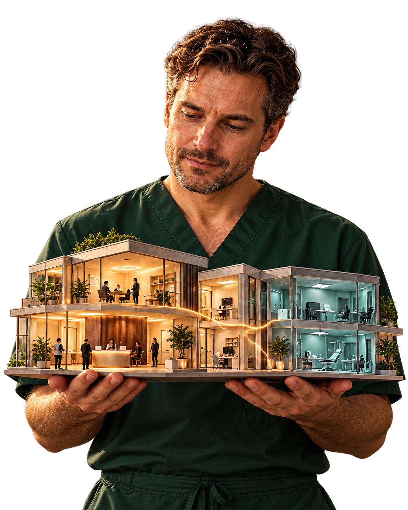

ЦИФРОВЫЕ РЕШЕНИЯ ДЛЯ ВЛАДЕЛЬЦЕВ КЛИНИК
Вся клиника
на ваших руках.
Вы лечите и управляете. «Пульс клиники» помогает увидеть, на чём держится выручка, где просадка и что остаётся после расходов.
Разработка под вашу клинику.
Ваши направления, расчёты и правила работы.

ПОНЯТЬ, ЧТО ПРОИСХОДИТ
За общей выручкой
увидеть главное.
Одно направление загружено, в другом — тишина. Посмотрите на клинику целиком, чтобы понять, где разбираться.
- 01
Что остаётся?
Выручка, зарплаты врачей и расходы.
- 02
Что приносит результат?
Направления, врачи и динамика по месяцам.
- 03
Куда идут пациенты?
Источники обращений и начало лечения.
ПРИМЕР · ВСЕ ДАННЫЕ ВЫМЫШЛЕНЫ
Клиника TEPLOFF
−165 000 ₽ к августу
Включая зарплату врачей
Выручка минус расходы
На чём держится выручка
В этом примере основная выручка приходится на хирургические направления.
Расходы выше выручки
Месяц закончился с убытком. Посмотрите структуру расходов и динамику направлений.
Разобрать пример подробнее ↗Сравните месяцы. Все данные в примере вымышлены.
ВАША ЗАДАЧА ЗАДАЁТ ФОРМУ
Сначала ваши вопросы.
Потом ваша система.
Разрабатываю цифровые инструменты под конкретную клинику и пожелания её владельца: от управленческих цифр до сопровождения пациента.